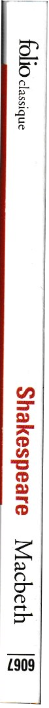
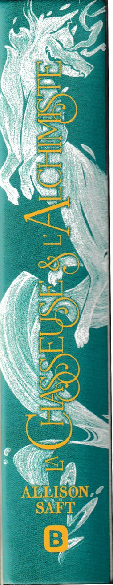
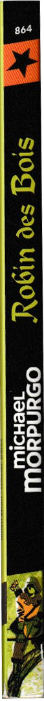
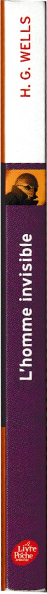

All you got to do is scroll to the side and hover on books to see what I thought about the book !

Macbeth - Shakespeare
Read

Le monde selon Sisun - Chung Serang
Read

Le trône du prisonier - Holly Black
Read

L'héritier trahi - Holly Black
Read

Dark heir - C.S. Pacat
Read

Le petit prince - Antoine de Saint-Exupéry
Read

Fourth wing - Rebecca Yarros
Read

-
Read

La Métamorphose - Kafka
Read

Le joueur d'échec & Lettre d'une inconnue - Stefan Zweig
Read

Cleopatra and Frankenstein - Coco Mellors
Read
-
Read

Hamlet - Shakespeare
Read

The Picture of Dorian Gray - Oscar Wilde
Read on July 17 2024
How can someone DRASTICALLY change like so? That shit is scary I really hope no human can do so but
I know that’s being delusional. If only lord Henry aka Prince Paradox had shut is mouth and just went! And
oh Basil, our precious beloved Basil… A wonder I got to go through the various random enumeration of historical
facts and objects that Dorian came to learn about! But the book was clearly an interesting experience but I hope not
as such the as one Dorian read during his lit’le journay. (The guy was fully convinced he wasn’t at any moment of
fault). And the ending was exquisite dramatic and beautiful just as I like ‘em.
Comment le prince Cardan en est venu à détester les histoires - Holly Black
Read 01/12/2023
How delightful to plunge into this universe again. To learn more about cardan was really comforting he doesn’t
seem to be such a meanie now? He absolutely loves Jude and that’s oh so great. I loved the different stories
they were so well written and told. I love it I love it I love it. And far most the moment where
cardan is on earth spending moments with Jude Viv heather and oak. And it was so funny to think of Madoc living there!

Love from Medina to Mecca - S.K. Ali
Read

The midnight library - Matt Haig
Read 14/10/2023
Learning about a possibly adorable and funny cat and then learning he’s been hit by a car was rough
for a 6th page. A depressed but still hopeful version of 16 wishes. WHY wouldn’t they give her some memories
when she enters a new life so she’s not having zero clue of whatever she’s doing I CANNOT WITH THIS STRESS I
HAVE ANXIETY. I really like Hugo’s theory about life quantum page 144 or so. The last third especially felt like
a letter to a younger self to encourage her to continue on her “when I grow up I will be” journey and I really loved that.
To finish with it was such a warm book it healed my innerself.

Libérons Les étoiles - Hafsah Faizal
Read 30/08/2023-13/09/2023
Arghhhhh I feel sooo nostalgic. It was sooo great eventhough I struggled to get through it. Everybody almost died or literally did or what?
The Zumra was oh so loveable. And Nasir and Zafira? Oh my I couldn’t breathe they were sooo cute. I add Haider in the list of great villains
(yes. I was seduced). And the WORLD BUILDING? The author did such a great job. Well I just loved it I must say. To be honest I clearly cannot
remember all the things. Over 1400 pages guys that‚Äôs too much for my brain. But I saw a good part of all the hints and it was done sooo very well I‚Äôm glad I read this series üòå

Chasseurs de flammes - Hafsah Faizal
Read 23-26 august 2023
IM INTO IT! At first I was sooo bored and hated Zafira’s chapters but when they arrived at Sharr?
OH. MY. All I needed was Deen to die. Seriously who the fuck is you Deen? (No hate :))And now that the
tension is here‚Ķ I‚Äôm like don‚Äôt stooop. ü§≠.
Anyway I just love Altair if he dies I stop everything (yes Yasmine I’m talking about yah).
Also the family tree is soooo messed up seriously. At some point I started to reread some pages cause
I was like wait what?. But it was SO GREAT.
I screamed but I screamed LOTS there was too much of EVERYTHING.I absolutely loved it and was pretty much surprised to be sad at Benyamin’s death.
Now trêve de bavardage and give me the next volume I cannot be left with all this tension. Speaking
of tension ... Why is the lion of the night so freaking charismatic, why are villains there's no business
for me to be more interested by the villain! But Totally understand Anadil.

La chasseuse et l'alchimiste - Allison Saft
Read

Dark rise - C.S. Pacat
Read

My dear f***ing prince - Casey McQuiston
Read
King Lear - Shakespeare
Read 09/11/2023-26/12/2023

Vie et enseignement de Tierno Bokar - Amadou Hampâté Bâ - Rebecca Yarros
Read

Paradise kiss - Ai Yazawa
Read

The importance of being earnest - Oscar Wilde
Read

Animal Farm - George Orwell
Read

La machine infernale - Jean Cocteau
Read

Mia et le migou - Jacques-Rémy Girerd
Read
Five feet apart - Mikki Daughtry, Rachael Lippincott, Tobias Iaconis
Read

My year of rest and relaxation - Ottessa Moshfegh
Read

If we were villains - M.L. Rio
Read

Saison d'orages et de silence - Roseanne A. Brown
Read

Unravel me - Tahereh Mafi
Read

Shatter me - Tahereh Mafi
Read

L'étranger - Albert Camus
Read

Love from Mecca to Medina - S.K. Ali
Read 09/11/2023-26/12/2023
This one seemed WAY better for me than the first one. I STRUGGLED getting through it but in the end I
just gulped it. I think this book was sooo important that I needed to read it at the right time. For my faith (it
was so helpful on an incredible scale, lately I felt really disconnected to Allah and this book just narrowed my
sight of everything +other things ) but also for myself (the married life and how you deal with problems) it
just helped my religionship? as it helped my relationships. It just seemed so realistic I found bits of myself
in every pages. It undid and made me unlearn the fact that human are perfect through faith and don’t have any flaws and
that pilgrimage is easy.

Les impatientes - Djaïli Amadou Amal
Read

Mariposa T.2 - Azra Reed
Read

Incendies - Wajdi Mouawad
Read

L'ami retrouvé - Fred Uhlman
Read

Flocons d'amour - John Green, Lauren Myracle, Maureen Johnson
Read 09/11/2023-26/12/2023

Les sept maris d'Evelyn Hugo - Taylor Jenkins Reid
Read
Love from A to Z - S.K. Ali
Read
Tortues à l'infini - John Green
Read 09/11/2023-26/12/2023

Six of crows - Leigh Bardugo
Read
Normal people - Sally Rooney
Read
L'as de coeur - Morgane Moncomble
Read

Le chant des sans repos - Roseanne A. Brown
Read

Gatsby - F. Scott Fitzgerald
Read

Jamais plus - Colleen Hoover
Read 09/11/2023-26/12/2023

Mariposa T.1 - Azra Reed
Read

Nos étoiles contraires - John Green
Read

Nous les menteurs - E. Lockhart
Read
I fell in love with hope - Lancali
Read

La reine sans royaume - Holly Black
Read

Le roi maléfique - Holly Black
Read

Les soeurs perdues - Holly Black
Read

Le prince cruel - Holly Black
Read
Qui es tu Alaska - John Green
Read
La duperie de Geunièvre - Kiersten White
Read 09/11/2023-26/12/2023

Captive T.2 - Sarah Rivens
Read
Used to love it when I was younger and dumber but right now if I read it again I’ll feel like I’m
loosing time. Hear me out ! These kind of books are great to laugh with the funny characters and jokes even
hilarious which is mainly WHY I loved them. Nonetheless the toxic dark romance books were just a phase for me (a Wattpad
teenager who swam in those) and it is not the person I am today so IT IS great for my memories and stuff and I keep it
because I loved it and have >great laughs when I think about Ben and others (I am deeply attached to my things) but as a BOOK it
is not for me. PLUS I remember when it was really in the üîûparts I irked so much because I was NOT supposed to be
exposed to these kind of things at THIS AGE. But that’s one of my other growing stories so it is sad but that’s life.
I only hope that Wattpad will work something out to prevent youngsters to be able to access triggering stories as easily as I used to.

Perfectly wrong - Sarah Rivens
Read
Used to love it when I was younger and dumber but right now if I read it again I’ll feel like I’m
loosing time. Hear me out ! These kind of books are great to laugh with the funny characters and jokes even
hilarious which is mainly WHY I loved them. Nonetheless the toxic dark romance books were just a phase for me (a Wattpad
teenager who swam in those) and it is not the person I am today so IT IS great for my memories and stuff and I keep it
because I loved it and have >great laughs when I think about Ben and others (I am deeply attached to my things) but as a BOOK it
is not for me. PLUS I remember when it was really in the üîûparts I irked so much because I was NOT supposed to be
exposed to these kind of things at THIS AGE. But that’s one of my other growing stories so it is sad but that’s life.
I only hope that Wattpad will work something out to prevent youngsters to be able to access triggering stories as easily as I used to.

Captive T.1 - Sarah Rivens
Read
Used to love it when I was younger and dumber but right now if I read it again I’ll feel like I’m
loosing time. Hear me out ! These kind of books are great to laugh with the funny characters and jokes even
hilarious which is mainly WHY I loved them. Nonetheless the toxic dark romance books were just a phase for me (a Wattpad
teenager who swam in those) and it is not the person I am today so IT IS great for my memories and stuff and I keep it
because I loved it and have >great laughs when I think about Ben and others (I am deeply attached to my things) but as a BOOK it
is not for me. PLUS I remember when it was really in the üîûparts I irked so much because I was NOT supposed to be
exposed to these kind of things at THIS AGE. But that’s one of my other growing stories so it is sad but that’s life.
I only hope that Wattpad will work something out to prevent youngsters to be able to access triggering stories as easily as I used to.

Antigone - Jean Anouilh
Read

Germinal - Zola
Read

Little women - Louisa May Alcott
Read
Céleste ma planète Timothée de Fombelle
Read

Et ils meurent tous les deux à la fin - Adam Silvera
Read

Robin des bois - Michael Morpurgo
Read

L'homme invisible - H.G. Wells
Read

La photo qui tue - Anthony Horowitz
Read
Un marin de trop - Flore Talamon
Read

L'affaire Caïus - Henry Winterfeld
Read

Bilbot le hobbit - J.R.R Tolkien
Read

L'enfant de sous le pont - J.M.G Le Clézio
Read

L'ograsseur - Philippe Barbeau
Read